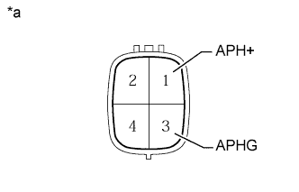

ВОЗДУШНЫЙ НАГНЕТАТЕЛЬ (для моделей с вспомогательной системой подачи воздуха в нейтрализатор) > ПРОВЕРКА |
| 1. ПРОВЕРЬТЕ ВОЗДУШНЫЙ НАГНЕТАТЕЛЬ В СБОРЕ |
Проверьте сопротивление отопителя.
|  |
Измерьте сопротивление в соответствии со значениями, приведенными в таблице ниже.
| Контакты для подключения диагностического прибора | Состояние | Заданные условия |
| 1 (APH+) - 3 (APHG) | -20°C (-4°F) | 3,6 - 17,6 Ом |
| -10°C (14°F) | 3,4 - 16,5 Ом | |
| 0°C (32°F) | 3,1 - 15,4 Ом | |
| 10°C (50°F) | 2,8 - 14,3 Ом | |
| 20°C (68°F) | 2,7 - 13,2 Ом |
| *a | Устройство с неподсоединенным жгутом проводов (воздушный нагнетатель) |